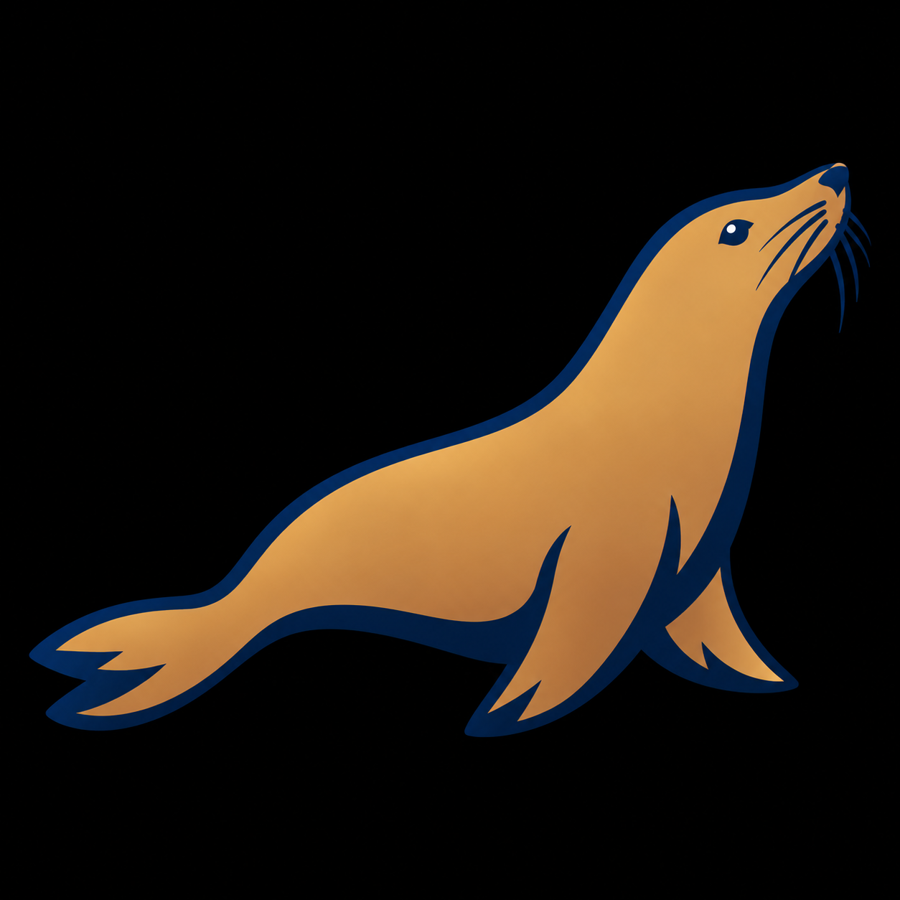
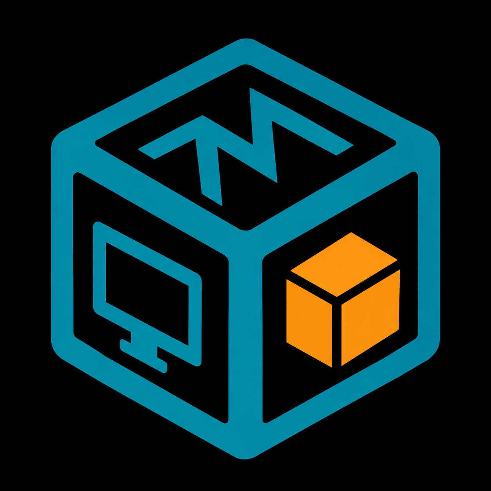
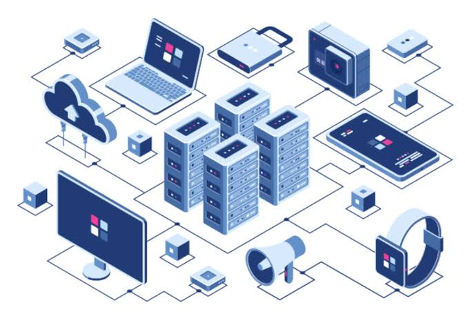

Après l’obtention de mon baccalauréat général, avec les spécialités Mathématiques et Physique-Chimie, en 2024 au lycée L’Institution à Saint-Malo, j’ai intégré un IUT en Génie Électrique et Informatique Industrielle (GEII).
Cette formation m’a permis de découvrir différents domaines, notamment la partie industrielle, qui correspondait moins à mes attentes. En revanche, les enseignements liés à l’informatique ont confirmé mon intérêt pour ce domaine et m’ont conforté dans l’idée de m’y orienter professionnellement.
En 2025, j’ai également préparé et réussi le concours de sous-officier de gendarmerie, avec l’objectif de rejoindre la Gendarmerie nationale. Cependant, à la suite d’une opération récente des yeux, j’ai dû reporter mon entrée en école afin d’attendre une stabilisation de ma situation.
Souhaitant malgré tout continuer à avancer dans mon projet professionnel et développer mes compétences dans le domaine informatique, j’ai choisi d’intégrer un BTS Services Informatiques aux Organisations (SIO), spécialité Solutions d’Infrastructure, Systèmes et Réseaux (SISR).
Cette formation me permet aujourd’hui de renforcer mes compétences en systèmes, réseaux et administration informatique, tout en développant progressivement mon intérêt pour la cybersécurité, domaine dans lequel je souhaite particulièrement évoluer.


Formation préparant aux métiers de l'administration des systèmes et des réseaux.
Expérience dans le commerce, la gestion des stocks et le travail en équipe.
Préparation et réussite du concours de sous-officier de gendarmerie.
Formation GEII : Génie électrique et informatique industrielle.
Travail en équipe, relation client et respect des procédures.
Spécialités Mathématiques et Physique-Chimie. Baccalauréat obtenu en 2024.
Ici apparaîtront les certifications déjà passées ou celles que je projette de passer.
Certification validant les bases de l'administration d'un système Linux et de la ligne de commande.

2027 - à venir
Configuration des équipements réseaux, câblage, communication Ethernet, adressage IP , routage statique et dynamique, sous-réseaux, DHCP, VLAN , wifi, prototypage virtuel, utilisateurs et dossiers partagés, Maquettage de l’infrastructure système et réseau .
2027 - à venir
Configuration pour administrer un site à distance, automatiser la gestion de fichiers, d’utilisateurs et de groupes, avec Powershell, planifier les taches sous Linux avec cron.
2027 - en cours
Inventaire materiel et logiciel d’une organisation. Création de groupes statistiques et dynamique . Configurattion de partage de fichiers et de niveau d’habilitations .
2027 - à venir
Création de VM (Windows 11 et Ubuntu Desktop ) . Ajout d’un nouvel ordinateur dans Active Directory et dans un réseau serveur . Prise en charge de pannes matérielles , logicielles et d’accès à un service du réseau . Création de comptes et groupes d’utilisateurs . Ajout d’autorisations de sécurités NTFS . Évolution de l’architecture d’un réseau.
2027 - à venir
À la demande d'un développeur : installation d'un environnement de développement web complet et d'un environnement de test pour une application web.
2027 - à venir
Projet qui sera réalisé durant le stage de première année de BTS SIO SISR
39 rue de la Fossette
35800 Saint-Lunaire